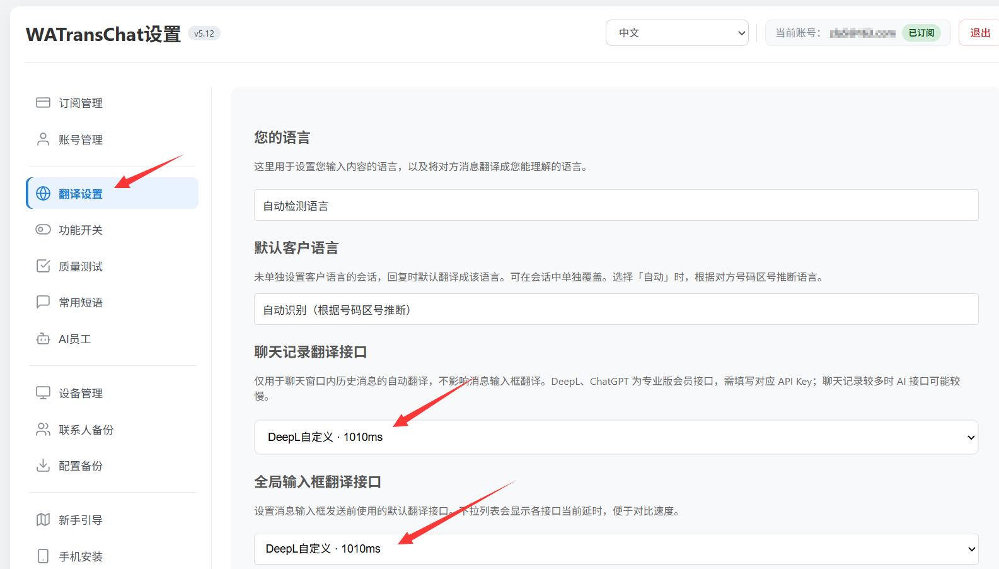
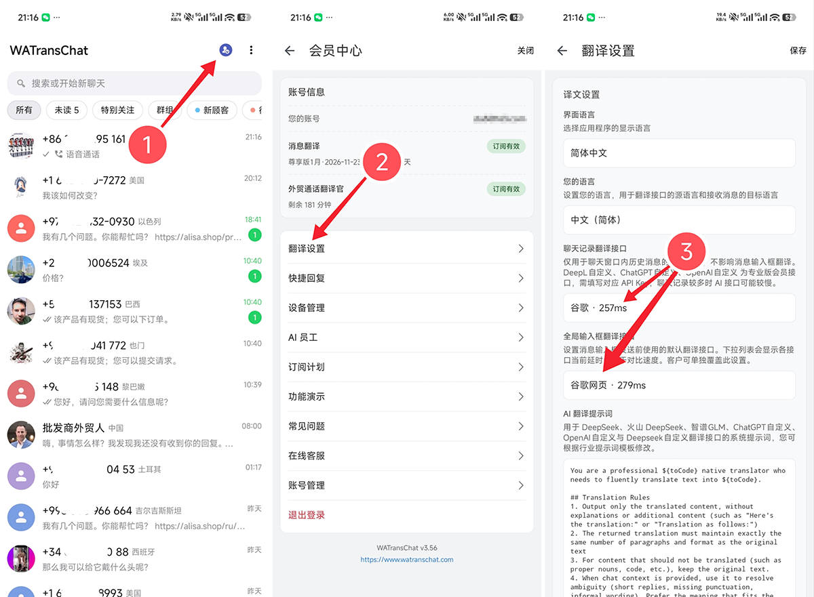
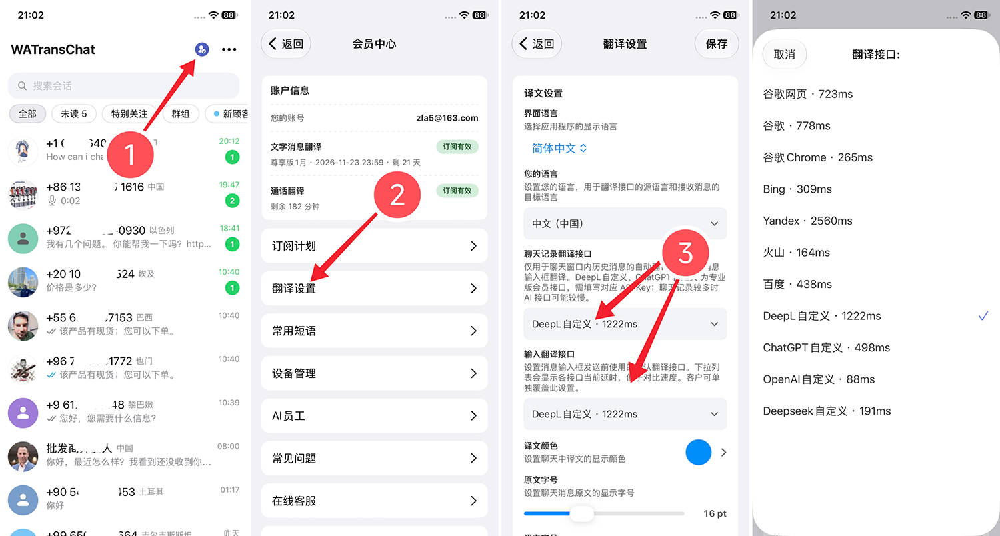
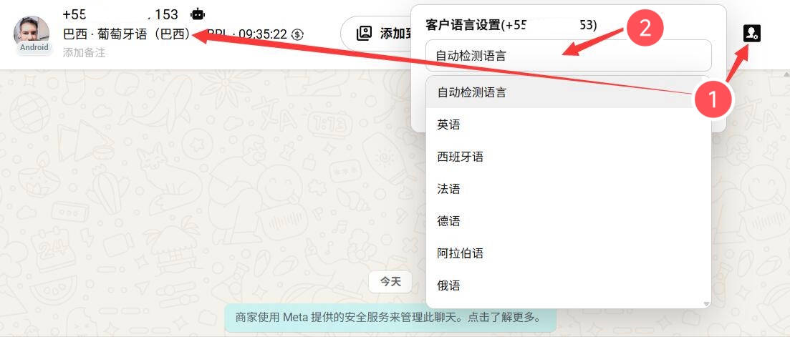
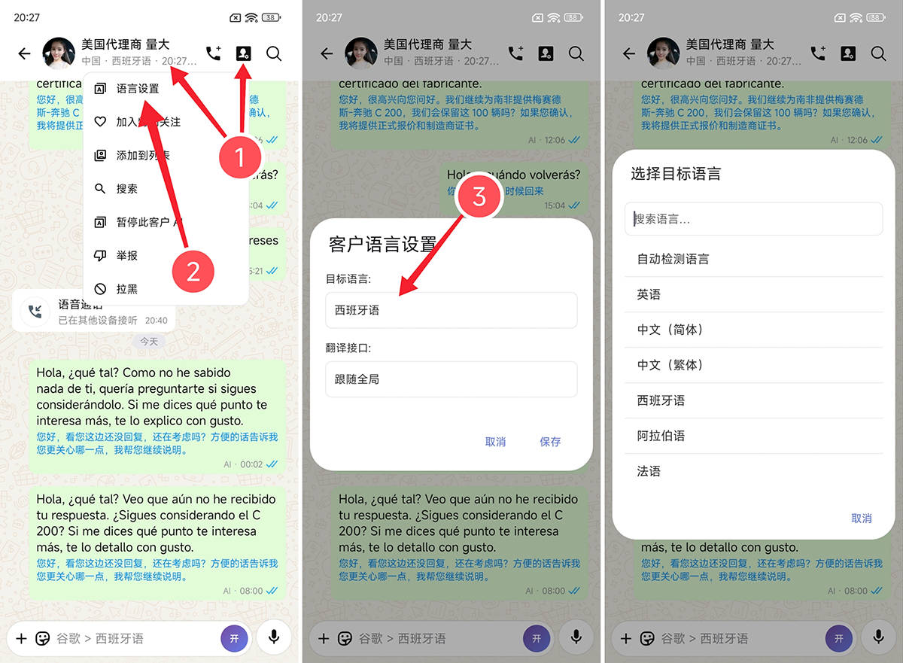
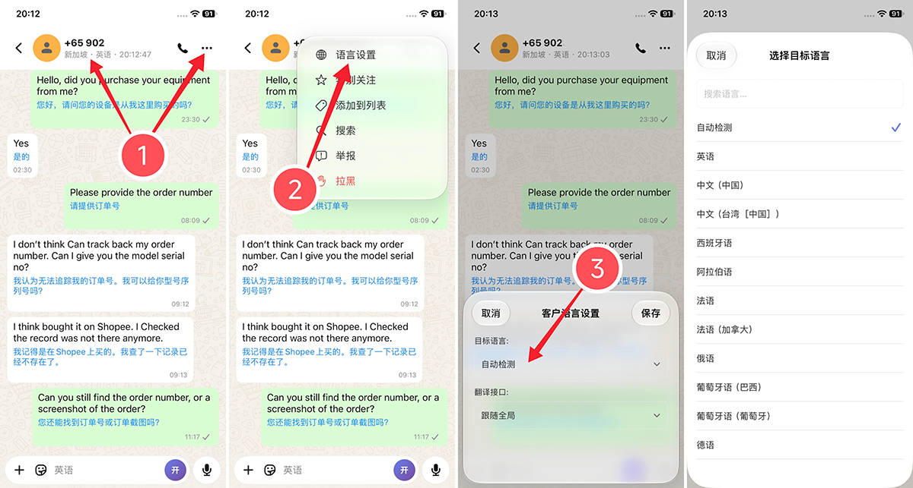

消息不翻译
消息未翻译可能有多种原因，请按场景对照排查。
1. 聊天记录中的消息不翻译
请检查 聊天记录翻译接口 的延时是否过大。延时过大时，翻译会非常慢，甚至失败。 请尝试更换其它翻译接口。
入口位置见各端翻译接口设置（也可打开 更换翻译接口 查看完整说明）：



2. 消息输入框发消息不翻译
同语不译（对方也是中文）
请确认对方是否为中国人 / 中文用户。若输入框提示 「同语不译」，说明系统判断对方语言与您相同，消息无需翻译。
若你在用中文号码自测，可为对方单独修改一种语言后再试。入口见各端客户语言设置（完整说明见 修改客户语言）：



全局输入框翻译接口延时过大
请检查 全局输入框翻译接口 的延时是否过大。延时过大时，翻译会非常慢，甚至失败。 请尝试更换其它翻译接口（入口同上文各端翻译接口设置图）。
3. 检查国际网络是否可用
请确认国际互联网未断开。可在浏览器打开 https://translate.google.com/ ，若无法正常访问，请先排除网络 / VPN 问题后再试翻译。
4. 检查所选翻译接口是否可用
若使用 DeepSeek、OpenAI、ChatGPT 等自定义接口，请确认：
- API Key 是否填写正确；
- 额度是否充足；
- 账号是否已欠费或被停用。
还有问题？
若以上内容未能解决您的问题，欢迎联系客服获取一对一协助。